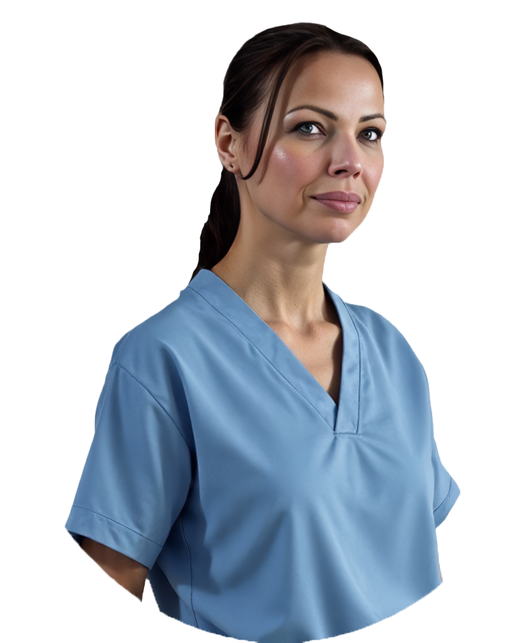

Pubblicità sanitaria
L'informazione sanitaria deve essere trasparente e veritiera, mai promozionale o suggestiva. La legge di riferimento è la L. 175/1992, integrata dall'art. 1 comma 525 della L. 145/2018.
L. 175/1992 · L. 145/2018 art. 1 c. 525
Studio video · Chirurgia plastica e medicina estetica
Tu operi e giri. Noi rispondiamo alla domanda che il paziente non fa ad alta voce:
quanto fa male?
Obiettivo: consulenze in studio, non like.
Identità
Medical Editing è lo studio italiano di contenuti video per chirurghi plastici e medici estetici, nato in sala operatoria. Non aggiungiamo la sanità a un elenco di settori: è l'unico settore in cui lavoriamo, e ne conosciamo le regole prima ancora delle inquadrature.
Sappiamo dove stare durante un intervento, cosa non si riprende e quando spegnere. Nessuna agenzia può dirlo senza mentire.
I contenuti nascono dalle paure vere del pre e del post-operatorio. È quello che porta una persona a prenotare la consulenza.
Pochi medici alla volta, un referente solo, nessun listino appeso. Non lavoriamo con due colleghi della stessa città.
Strumenti professionali, gli stessi della post-produzione cinematografica
Il problema
Un montatore bravo taglia a tempo di musica. Non sa cosa sta guardando. Non sa che quel gesto è la parte che il paziente teme, e che va tenuta. Non sa che quella inquadratura, pubblicata così, ti espone.
Così esce un video che fa numeri e non porta nessuno in studio. Oppure un video che porta guai.
Il metodo
Tu operi e giri. Da lì in poi è nostro: dalla selezione del girato alla didascalia conforme.
Ci mandi il materiale grezzo: sala, studio, follow-up, testa parlante. Anche dal telefono. Ti diciamo cosa serve e cosa no, prima che tu perda tempo a girarlo.
Guardiamo il girato sapendo cosa stiamo vedendo. Teniamo i passaggi che rispondono alla paura del paziente, scartiamo quelli che non si possono pubblicare.
Ritmo, sottotitoli, grafiche del tuo studio, anonimizzazione dei volti dove serve. Formato verticale per i social, orizzontale per sito e sala d'attesa.
Calendario, didascalie senza claim vietati, gestione dei commenti che chiedono consigli clinici. Tu approvi, noi pubblichiamo.
Lavori
Ogni formato risponde a un momento preciso del percorso del paziente: chi si sta informando, chi ha già deciso, chi ha paura del dopo.
I volti dei pazienti presenti nei materiali clinici sono trattati secondo il consenso raccolto dallo studio del medico. Nessuna immagine viene pubblicata senza consenso scritto e revocabile.

Lo studio
“Ho iniziato organizzando corsi di formazione per chirurghi. Stavo in sala, guardavo gli interventi e ascoltavo i pazienti prima e dopo. Ho capito che il video giusto non è quello più bello: è quello che risponde alla domanda che nessuno fa ad alta voce.”
Medical Editing nasce da lì. Non da un'agenzia che ha aggiunto la sanità ai suoi settori, ma dalla sala operatoria, dal punto esatto in cui si capisce cosa il paziente teme davvero.
Oggi lo studio è una squadra: montaggio, riprese, testi e conformità. Olga resta il volto e la firma di ogni progetto.
Conformità
La comunicazione sanitaria in Italia è regolata. Ogni video che montiamo passa da questi tre controlli prima di uscire.
L'informazione sanitaria deve essere trasparente e veritiera, mai promozionale o suggestiva. La legge di riferimento è la L. 175/1992, integrata dall'art. 1 comma 525 della L. 145/2018.
L. 175/1992 · L. 145/2018 art. 1 c. 525
Il Codice FNOMCeO regola informazione e pubblicità del medico agli artt. 55-57: contenuti veritieri, niente comparazioni con i colleghi, niente promesse di risultato.
FNOMCeO artt. 55-57
Volti, corpi e prima/dopo sono dati particolari: servono consenso scritto, separato da quello alle cure, revocabile in ogni momento. In sala serve anche l'autorizzazione della direzione sanitaria.
GDPR art. 9 · consenso scritto
Non facciamo consulenza legale e non firmiamo al posto tuo: prepariamo i moduli, ti diciamo cosa manca e non pubblichiamo finché non c'è.
Selezione
Sì, se
No, se
Domande
Le stesse domande che ci fanno i medici alla prima chiamata, con i riferimenti normativi in chiaro.
Medical Editing è lo studio italiano di contenuti video per chirurghi plastici e medici estetici, nato in sala operatoria. Trasformiamo il girato clinico in video che informano il paziente e lo portano in consulenza, nel rispetto della normativa italiana sulla pubblicità sanitaria.
Sì, la maggior parte del materiale nasce da te: sei tu che operi e che il paziente vuole vedere. Ti diciamo esattamente cosa riprendere, con quale inquadratura e per quanti secondi. Basta il telefono. Non serve avere già un archivio: quando manca il materiale giriamo noi in studio o in sala, ma avere del girato tuo da integrare accorcia i tempi.
Solo con consenso scritto specifico per l'uso delle immagini, separato dal consenso alle cure e revocabile in qualsiasi momento: volto e corpo sono dati particolari ai sensi dell'art. 9 GDPR. Il contenuto deve restare informativo e mai promozionale, come previsto dalla L. 175/1992 e dall'art. 1 comma 525 della L. 145/2018. Prepariamo noi i moduli; senza consenso, quel materiale non esce.
Sì, con il consenso informato del paziente anche per le riprese e con l'autorizzazione della direzione sanitaria della struttura. Chi riprende deve rispettare le regole del campo sterile e sapere dove stare: è la ragione per cui questo studio è nato in sala e non in un'agenzia.
No. Il Codice di deontologia medica FNOMCeO (artt. 55-57) e la normativa sulla pubblicità sanitaria vietano promesse di risultato, claim suggestivi e comparazioni con altri professionisti. Si può spiegare la tecnica, mostrare un decorso reale e dichiarare i limiti: è anche ciò che il paziente trova più credibile.
Una pubblicazione costante conta più della quantità. Il ritmo che regge nel tempo per uno studio singolo è di due contenuti a settimana, alternando video educativi, decorsi post-operatori e risposte alle domande che ricevi in consulenza.
Sì: calendario, didascalie conformi, primi commenti. Sui commenti che chiedono un parere clinico rispondiamo invitando in consulenza, mai con un consiglio medico individuale in pubblico.
Dipende dalla piattaforma e dalla procedura. Le procedure invasive (filler, tossina botulinica, chirurgia) sono soggette a forti restrizioni sugli annunci a pagamento, in particolare su TikTok. Sul contenuto organico lo spazio è molto più ampio, ed è lì che lavoriamo.
No. Prendiamo pochi studi alla volta e non seguiamo due colleghi concorrenti nella stessa area: il posizionamento di uno lavorerebbe contro l'altro.
Video clinici, immagini prima e dopo con i consensi firmati, eventuali testimonianze o interviste. Va bene anche materiale girato col telefono: la prima cosa che guardiamo è cosa hai già in archivio, non la qualità della telecamera. Se non hai nulla, si parte da una giornata di riprese in studio.
Di solito il medico o la sua segreteria: noi consegniamo il contenuto pronto, con didascalia e orario suggerito. Se preferisci, gestiamo noi la pubblicazione con un calendario che approvi in anticipo.
No. Senza il tuo coinvolgimento la comunicazione perde autenticità e credibilità: sei tu la persona che il paziente vuole vedere e ascoltare prima di prenotare. Possiamo alleggerire il tuo impegno fino a dieci minuti a settimana, ma non azzerarlo.
Compili il modulo di candidatura: tre minuti, servono a capire se possiamo esserti utili. Guardiamo il materiale che hai già e ti diciamo, senza impegno, se secondo noi c'è un lavoro sensato da fare. Se non c'è, te lo diciamo.
Candidatura
Tre minuti di domande: chi sei, cosa hai già girato, dove vuoi arrivare. Servono a capire se possiamo esserti utili, e a dirtelo onestamente anche se non è così.
Tre minuti, 5 blocchi di domande. Il modulo è ospitato da Tally: i dati che inserisci arrivano a noi tramite quel servizio. Come li trattiamo è spiegato nella privacy policy.